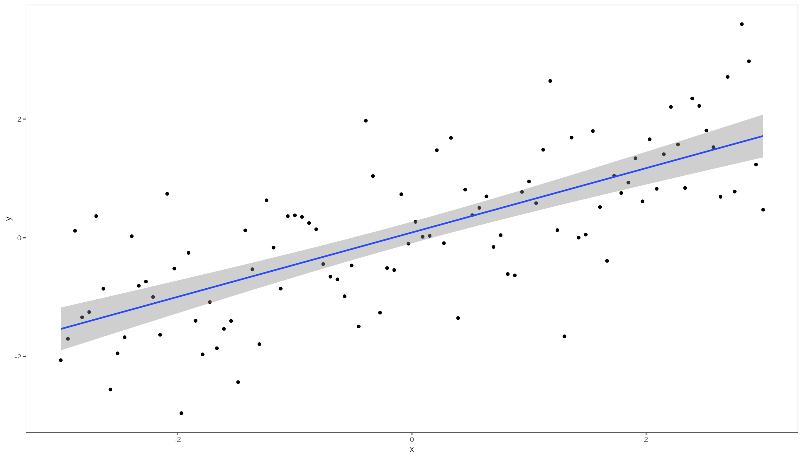
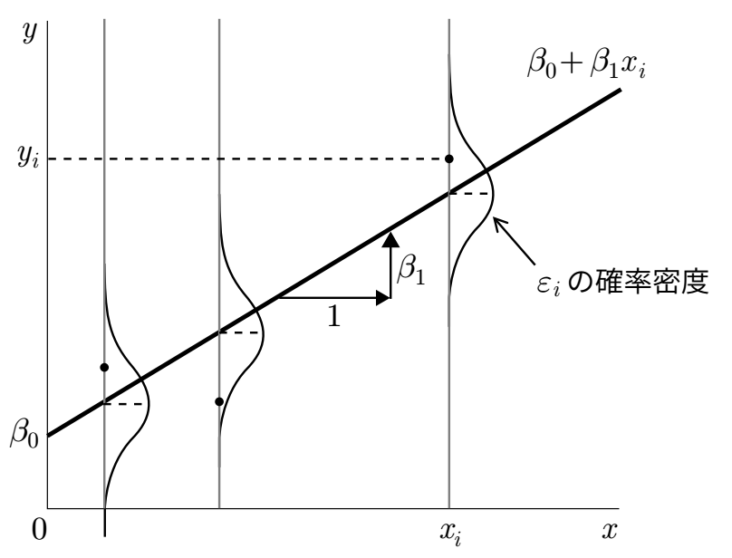

graph LR A[広告宣伝費] --> B[売上高]
11 回帰分析による統計的推定
11.1 単回帰による統計的推定
11.1.1 単回帰モデル
売上高と広告宣伝費の関係を考えるため、前章では散布図(scatter diagram)を使って、2変数の関係を見てみました。 次のような売上高を広告宣伝費で説明するモデルを考えてみます。
この因果関係を明らかにするため、売上高を応答変数Y、広告宣伝費を説明変数Xとして、次のようなモデルを構築します。
Y_i = \beta _0 + \beta_1 X_i
ここで\beta_0と\beta_1は定数です。 したがって、X_iの値が決まれば、応答変数Yの値は一意に決まります。 このようなモデルを決定的モデル(deterministic model)と呼びます。
ただ現実には、広告宣伝費が同じでも売上高が異なることがあります。 そこで売上高の水準が広告宣伝費だけで決まるのではなく、広告宣伝費では説明しきれない要因があることをモデルで表すために、確率変数である誤差項(error term)を回帰モデルに加えたものを考えます。
Y_i = \beta _0 + \beta_1 X_i + \varepsilon_i
現実のデータで，1つの説明変数が応答変数を完全に説明できる(つまりモデル上にすべてのデータが載っている)ことはほとんどないため、確率変数である誤差項を含めたモデルを確率モデル(probabilistic model)と呼びます。 本書では単回帰モデルとは、\varepsilon_iが正規分布に従うと仮定したモデルを指します。 図で書くと，次のようなモデルです。

この回帰モデルが意味をもつためには、誤差項\varepsilon_iが平均0で分散\sigma^2の正規分布に従うという仮定が必要です。

11.1.2 信頼区間と仮説検定
11.2 重回帰分析による統計的推定
11.2.1 重回帰モデル
重回帰でも単回帰でも統計的推定に変わりはありません。 重回帰モデルを以下のように表します。
Y_i = \beta _0 + \beta_1 x_{i1} + \beta_2 x_{i2} + \cdots + \beta_p x_{ik} + \varepsilon_i
この回帰係数\betaの推定値bを求めることが統計的推定です。
企業の売上高は、前年度の広告宣伝費と研究開発費で説明できる、つまり前年度の広告宣伝費と研究開発費が高いほど、売上高が高くなるのかどうかを考えてみます。
\text{売上高}_t = \beta_0 + \beta_1 \text{広告宣伝費}_{t-1} + \beta_2 \text{研究開発費}_{t-1} + \varepsilon_t
ではこの回帰モデルを推定するためのデータを読み込むため、tidyverseのreadrパッケージのread_csv()関数を使って、作業ディレクトリのdataフォルダの中に保存されているadv_2023.csvを読み込みます。
df <- read_csv("data/adv_2023.csv")重回帰モデルを推定するには、基本関数のlm()を使います。 重回帰モデルの場合、複数の説明変数があるため+でつなげていきます。
res <- lm(売上高 ~ lag(研究開発費) + lag(広告宣伝費), data = df)
coef(res) (Intercept) lag(研究開発費) lag(広告宣伝費)
1.004955e+05 1.716521e+01 6.913074e+00 上記の推定結果から、
\text{売上高} = 0.00000 + 0.1716 \text{研究開発費}_{t-1} + 6.8131 \text{広告宣伝費}_{t-1} であることが分かりました。
11.2.2 信頼区間と仮説検定
先ほどの回帰係数の推定結果は，1サンプルからの結果であり，サンプルの数を増やせば推定値の分布ができるのは，単回帰分析と同じなので， ここでも同じ方法で信頼区間を求めることが出来ます。 単回帰分析の場合，切片と回帰係数の2つが推定するパラメータなので，自由度がn-2のt分布を利用しました。 説明変数がk個ある重回帰分析の推定で利用するt分布の自由度は，n-k-1になります。 100(1-\alpha)％信頼区間は，
b_m - t _{n-k-1, \frac{\alpha}{2}} SE(b_m) \leq \beta_m \leq b_m + t_{n-k-1, \frac{\alpha}{2}} SE(b_m)